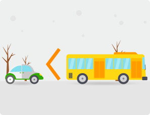
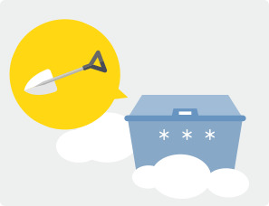

대설
일정 시간에 강설이 집중적으로 발생하여 인명 및 재산 피해를 유발하는 재해를 말하며, 24시간 신적설이 5cm이상 예상될 때 주의보를,
시간 신적설이 20cm이상 예상될 때. 다만, 산지는 24시간 신적설이 30cm이상 예상될 때 경보를 발령합니다.
대설 발생 시 이렇게 행동합니다.

- 차량 운전자는
- 자가용 차량 이용을 억제하고 대중교통(지하철, 버스 등) 수단을 이용합시다.
- 고속도로 진입을 자제하고, 국도 등을 이용합시다.
- 눈피해 대비용 안전 장구(체인, 모래주머니, 삽 등)를 휴대합시다.
- 커브길, 고갯길, 고가도로, 교량, 결빙구간 등에서는 서행 운전합시다.
- 라디오, TV 등을 항상 청취하여 교통상황을 수시로 파악 운행합시다.
- 간선도로변의 주차는 제설작업에 지장을 주니 삼갑시다.
- 지하철 공사구간의 복공판 통행 시에는 바닥이 미끄러우므로 서행 운전합시다.
- 차 간 안전거리를 확보하여 브레이크 사용을 자제합시다.
- 브레이크 사용 시에는 엔진브레이크를 사용합시다.
- 눈길에서는 제동거리가 길어지기 때문에 교차로나 건널목(횡단보도) 앞에서는 감속 운전합시다.
- 보행자는
- 가능한 외출을 자제합시다.
- 외출 시에는 미끄러지지 않도록 바닥면이 넓은 운동화나 등산화를 착용합시다.
- 미끄러운 눈길을 걸을 때에는 주머니에 손을 넣지 말고 보온 장갑을 착용합시다.
- 걸어가는 중에는 휴대전화 통화를 삼갑시다.
- 건널목(횡단보도)을 건널 때에는 차량이 멈추었는지 확인하고 도로에 진입합시다.
- 계단을 오르내릴 때에는 난간을 잡고 다니는 것이 안전합니다.
- 야간 보행은 매우 위험하므로 조속히 귀가합시다.
- 차도로 나와서 차량에 승차하여 타 차량의 주행을 방해하지 맙시다.
- 농촌지역에서는
- 붕괴가 우려되는 비닐하우스 등 농작물 재배시설은 사전에 점검 및 받침대 보강 등을 실시하여 피해를
예방합시다.
- 하우스에 처져 있는 차광막 등은 사전에 제거하여 피해를 최소화할 수 있도록 합시다.
- 피해예방을 위한 비닐 찢기 작업 시 등에는 안전사고에 유의합시다.
- 작물을 재배하지 않는 빈 비닐하우스는 비닐을 걷어내어 하우스를 보호합시다.
- 고립지역은 비상연락체계를 유지할 수 있도록 합시다.
- 라디오, TV 등을 청취, 폭설 등 기상상황을 수시로 파악할 수 있도록 합시다.
 눈이 20㎝ 정도 쌓이면 전깃줄이 끊어지고, 소나무가지가 부러집니다.
눈이 20㎝ 정도 쌓이면 전깃줄이 끊어지고, 소나무가지가 부러집니다.

- 가정에서는
- 내 집 앞, 내 점포 앞 도로의 눈은 내가 치우는 건전한 주민정신을 발휘합시다.
- 내 집 주변 빙판길에는 염화칼슘이나 모래 등을 뿌려서 미끄럼 사고를 예방합시다.
- 어린이와 노약자는 외출을 삼갑시다.
- 적설 시 차량, 대문, 지붕 및 옥상 위에 눈을 치웁시다.
- 노후가옥은 안전점검을 하여 붕괴사고를 예방합니다.
- 고립지역은 비상연락체계를 유지할 수 있도록 합니다.
- 직장에서는
- 평상시보다 조금 일찍 출근하고 일찍 귀가합시다.
- 출·퇴근 시에는 자가용 운행을 억제하고 대중교통(지하철, 버스 등)수단을 이용합시다.
- 직장 주변의 눈은 내가 치우는 건전한 주인정신을 발휘합시다.
- 직장 주변 빙판길에는 염화칼슘이나 모래 등을 뿌려서 미끄럼 사고를 예방합시다.
- 해안지역에서는
- 각종 선박 등 대피, 입출항 통제 및 결박(고정) 조치해야 합니다.
- 수산 증·양식시설은 어류 등이 동사하지 않도록 보온 조치해야 합니다.
- 주민, 낚시꾼, 행락객 등 해안가 접근을 하지 말아야 합니다.
- 해안도로 운행을 될 수 있으면 지양하고 안전 장구 부착 후 통행해야 합니다.
- 고립지역은 비상연락체계를 유지할 수 있도록 합시다.
- TV, 라디오 등을 시·청취하여 폭설 등 기상상황을 수시로 파악하여야 합니다.
 [KBS 슈퍼맨이 돌아왔다] 내 집 앞 눈 치우기와 동파 방지 요령
[KBS 슈퍼맨이 돌아왔다] 내 집 앞 눈 치우기와 동파 방지 요령 다운로드
다운로드 지진
지진
 태풍
태풍
 호우
호우
 강풍/풍랑
강풍/풍랑
 홍수
홍수
 대설
대설
 산불
산불
 산사태
산사태
 폭염
폭염
 가뭄
가뭄